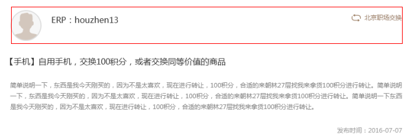

tableCell垂直居中总结
四种情况组合
table-cell特点：
- 1:同行等高。
- 2:宽度自动调节。
- 3:table-cell：支持IE8以上
table-cell使用方法：
- 1:父元素设置display: table-cell;vertical-align: middle;
- 2:子元素设置display: inline-block;vertical-align: middle;。
方法1：大小不固定/固定单个子元素（父元素高度固定）的垂直居中布局（组合：1-2、1-4）
我是内部文字
我是内部文字
我是内部文字
方法2：大小固定元素的垂直居中布局（父元素高度自适应）（组合：3-2）
table-cell：IE6、7不支持
方法3：大小不固定元素的垂直居中布局（父元素高度自适应）（组合：3-4）
table-cell：IE6、7不支持
方法4：使用table-cell两列自适应布局
壬戌之秋，七月既望，苏子与客泛舟游于赤壁之下。清风徐来，水波不兴。举酒属客，诵明月之诗，歌窈窕之章。少焉，月出于东山之上而和之。
我和左边等高
table-cell：IE6、7不支持

方法5：使用table-cell多列自适应布局
假如我是一张图
ERP:xxx
ERP:xxx
ERP:xxx
北京职场交换
方法6：使用float浮动和table-cell布局
我是内部文字
我是内部文字
我是内部文字
我是内部文字
我是内部文字
我是内部文字
方法7：给label标签设置table-cell属性
方法8：使用table-cell垂直居中,inner高度不固定
- 1.label标签包裹input和span标签，给其设置table-cell属性，内部元素居中对齐；
- 2.label标签的父元素高度不固定，设置padding撑开；
- 3.表单radio和checkbox都有默认的margin；
方法9：使用table-cell垂直居中,inner高度固定
- 外层高度固定，可以嵌套两层table-cell处理两层垂直居中
总结：vertical-align
- 1:父元素有固定高度/自适应时，子元素有固定高度/自适应：父元素设置display: table-cell;vertical-align: middle;，同时子元素设置vertical-align和inline-block；
- 2:可以根据同行等高、宽度自动调节来设置自适应多列布局
- 3:table-cell同样会被其他一些CSS属性破坏，例如float, position:absolute，所以，在使用display:table-cell与float:left或是position:absolute属性尽量不用同用。设置了display:table-cell的元素对宽度高度敏感，对margin值无反应，响应padding属性.
- 4:兼容性：table-cell：支持IE8以上